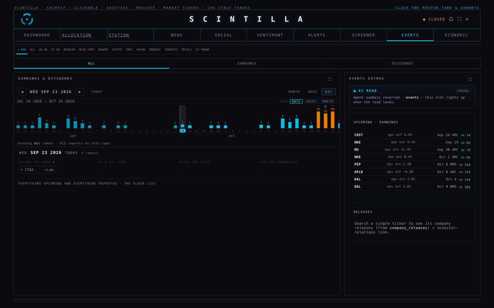
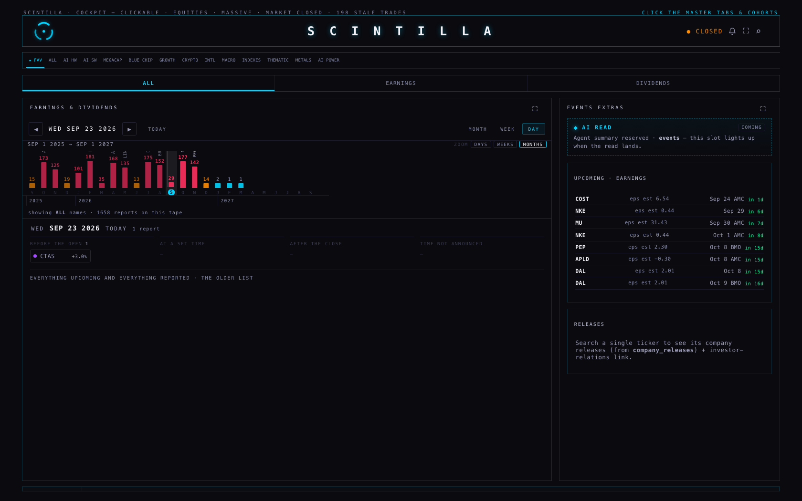
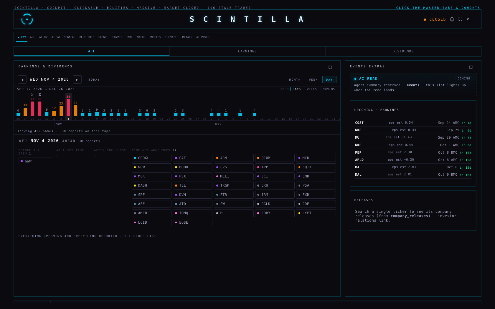
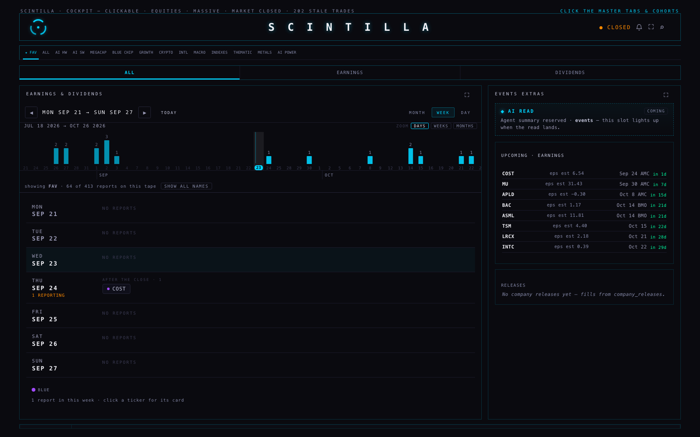
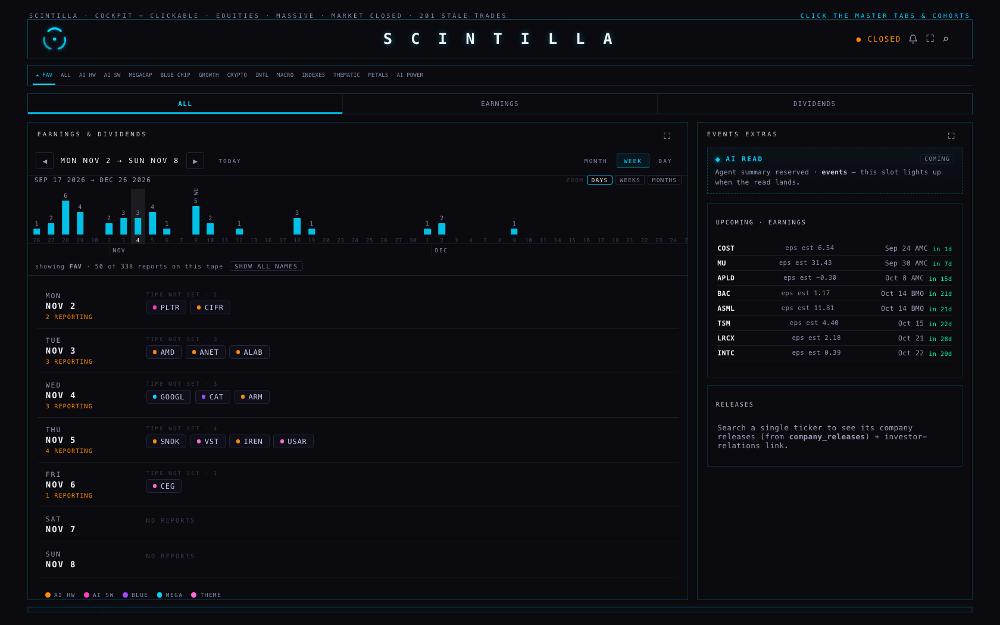
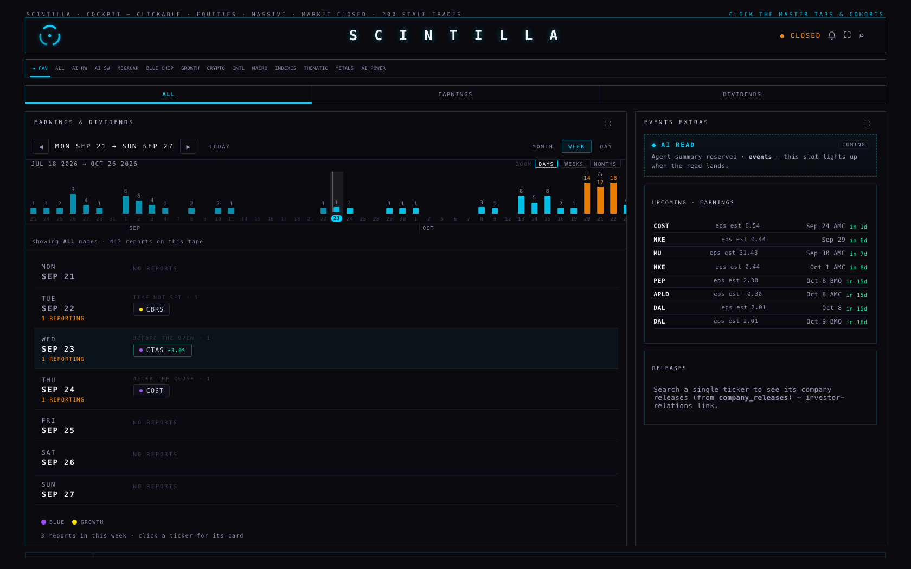
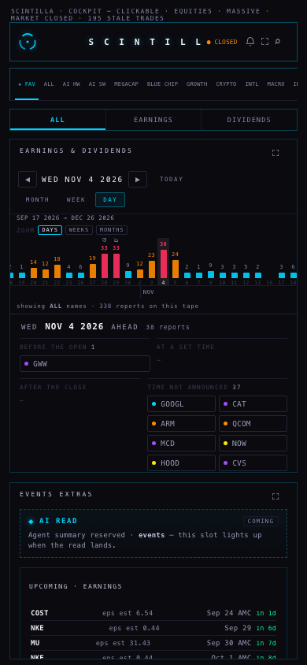
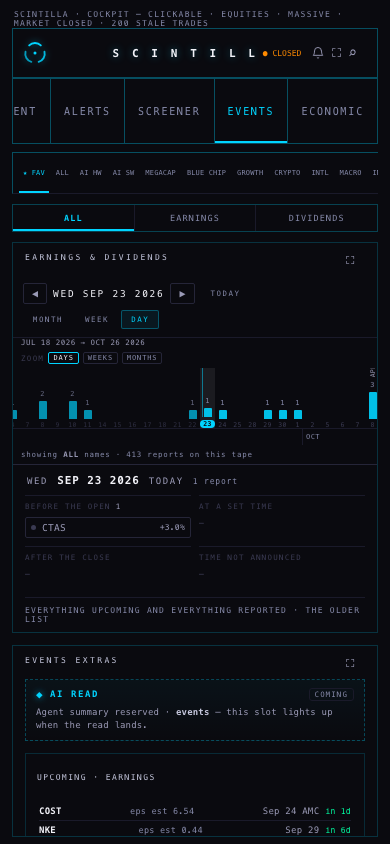

The timeline is no longer a view you switch to. It is a strip across the top of the earnings room that never leaves the screen, and the view underneath — MONTH, WEEK or DAY — follows whatever you tap on it. One bar can be a day, a week or a month, so the whole season fits on one screen or a single day can fill it. Nothing is deployed: branch hub/earnings-4-20260923, built from Hub production b6913cb.
“I do like this timeline view, but it's very thin. So how about just having it on top of the other views, more like a header.” · “There's a blue line. I'm trying to click on it and it doesn't say… nothing. On the 23rd. October. I don't get it.” · “It's requiring a lot of scrolling… don't you think it should be a little more dynamic to zoom? I feel like it's empty. I'm going to the week view… no report.” · “What happened to the daily view? … The daily view just has a scrolling downwards.”
The earnings room has three parts now, top to bottom:
The one thing that moves and the one thing that never does. Bar height is scaled to the busiest bar actually on screen and re-scaled as you drag, so a quiet fortnight still has a shape. Colour is never re-scaled: red always means 25 or more reports, in season and out of it.



The blue line was today. It was drawn as decoration, so it had nothing to say and nothing happened when you clicked it. Now it is a real mark with words on it: “the cyan line is TODAY, WED SEP 23 — everything left of it has happened, everything right of it is still to come”. And every other mark answers too:
| What you touch | What it says | What happens when you click |
|---|---|---|
| A bar with reports | WED NOV 4 · 38 names you track report · GOOGL, CAT, ARM · click to open the day below | The day opens underneath |
| An empty bar | FRI OCT 23 · nothing for FAV · 14 reports across all names · click to open the day below | The day opens, and says the same thing in full |
| A week bar (ZOOM · WEEKS) | the week of MON OCT 19 · 14 names you track report · click to open the week below | WEEK opens on that week |
| A month bar (ZOOM · MONTHS) | NOVEMBER 2026 · 120 names you track report · click to open the month below | MONTH opens on that month |
| The month/year strip | SEP · 22 bars | — |
The bar you are looking at is highlighted on the tape, so you can always see where the view below is standing. Zoom is the three buttons, a pinch, or ⌘/ctrl and the wheel; a plain wheel or a drag still walks the season sideways.
It was your FAV strip: three names rarely report in the same week. Nothing on the screen said so. Two changes:



DAY keeps everything it had, but the day is read across now: before the open · at a set time · after the close · time not announced. Each heading takes width in proportion to how many names sit under it, and a busy heading wraps its names instead of running off the bottom. The older UPCOMING | PAST · REPORTED list is still there, one click below, under “everything upcoming and everything reported”.


| Number | Where it comes from | How it is read |
|---|---|---|
| Every bar on the tape | earnings_events (ticker + date only), filtered to the names in cohorts | One request per 120 days of tape; a full page is admitted in the line under the tape |
| The reports in the view | earnings_events, all columns, for that one month, week or day | One request per view |
| Which names are in a cohort | The Hub's own cohort map, already loaded | The room never asks for it again |
| The order of names, and their dots | Market caps and cohorts the board already read | No extra request; a size that has not arrived is said out loud, never guessed |
| “before the open” / “after the close” | report_time on the row — and only when the row has one | No time stored means “time not announced”, never a guess |
The tape writes nothing, anywhere. Neither does the room.
The earnings catcher does exist, and it works. It is the Supabase function fmp-events (v2), run by the schedule fmp-events-2h every two hours: it sweeps FMP's earnings calendar from a week back to three weeks ahead, walks the universe 30 names at a time, and upserts into earnings_events on ticker + date.
Why it carries no times. Its row builder writes exactly seven fields — ticker, date, EPS actual, EPS estimate, revenue actual, revenue estimate, surprise — and report_time is not one of them. It never has been. That is the whole reason Costco, Micron and ASML said “time unknown”: nothing was ever writing that column.
What is added here. A second, small function, earnings-report-time, scheduled by pg_cron for 09:23 New York on weekdays. It is the same fill that was run by hand on 23 September, with the same four rules:
report_time=is.null, so the database — not just the code — refuses a row that already has a time.It runs one at a time (a flag in app_config), leaves its last run's counts where anyone can read them, and reads its key from the Supabase environment. No key is on any Mac, and neither file contains one. Rolling it back is one line, written at the top of the migration.
Honest gap: this estate's other schedules live only inside Supabase, so there is no example in git of how they pass their bearer. The migration reads it from Vault by name and says, in its own comment, to use whatever pattern the existing crons use if that differs. The coordinator applies it; nothing was deployed or scheduled from here.
xfeed-publish — and are not touched by this work. Everything else passes: 461 tests, 457 passing, the 2 known failures, and 14 new tests for what is above.Today: enter EVENTS and you see every name, with the strip one tap away; tap a cohort and the room follows until you leave. My recommendation: keep it. A calendar that opens empty teaches you not to trust it. If you would rather it always followed your strip, it is one line back.
Today: the room opens on the day, under the tape — and if nothing reports today, it moves to the next day that does and says so. My recommendation: keep it. WEEK is one tap, and the tape is always there for the season. The alternative is landing on WEEK, which shows more at once but less of what is happening now.
Today: DAYS reaches about three months, WEEKS about a year, MONTHS two years, each measured from the month you are in. My recommendation: keep it and see how it reads for a week. Reaching further costs another request per 120 days; it is one number to change if you want more.